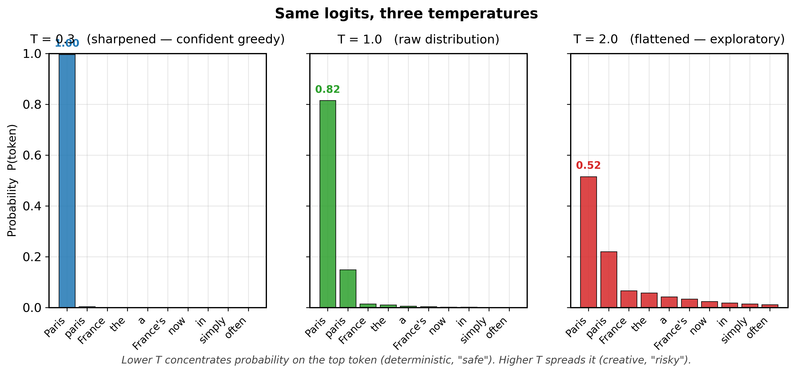
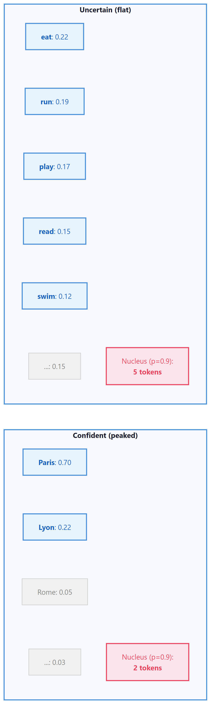

At temperature 0.0, I am a boring but reliable narrator. At temperature 2.0, I am a jazz musician who has lost the sheet music.
Greedy, Temperature-Unstable AI Agent
Prerequisites
This section builds directly on the deterministic decoding strategies (greedy search, beam search) from Section 5.1. Understanding Section 4.1, probability distributions, and how a model produces logits (from Section 4.1) is essential. The temperature and sampling parameters introduced here are the same ones you will use when calling LLM APIs in Section 10.2.
Why add randomness? Deterministic decoding (Section 5.1) produces the same output every time, which is great for translation but terrible for creative writing, conversation, and brainstorming. If you have not yet read Section 5.1, start there first; it introduces the greedy and beam search foundations that stochastic methods build on. Human language is inherently varied: ask ten people to complete the same sentence, and you will get ten different answers. Stochastic sampling introduces controlled randomness into the decoding process, producing diverse, interesting, human-like text. The challenge is finding the right balance: too little randomness yields repetitive, robotic text; too much yields incoherent gibberish. This section covers every major technique for controlling that balance.
5.2.1 Pure Random Sampling
The most direct form of stochastic decoding is ancestral sampling: at each step, sample the next token from the full probability distribution. If the model says "the" has probability 0.15, "a" has 0.10, "quantum" has 0.0001, and so on across the entire 50,000-token vocabulary, you sample according to those exact probabilities.
This produces maximally diverse output, but the quality is often poor. The long tail of the vocabulary contains thousands of tokens that are individually very unlikely but collectively hold significant probability mass. Even if each improbable token has only a 0.001% chance, with 50,000 tokens in the vocabulary, sampling from the full distribution occasionally draws rare and contextually inappropriate words, derailing the generation.
In a typical 50,000-token vocabulary, the top 500 tokens might hold 95% of the probability mass for any given position. That means 49,500 tokens share the remaining 5%. Pure sampling treats that 5% as fair game, which is why you occasionally get bizarre outputs like "The president announced a new policy of flamingos." Every truncation method in this section (top-k, top-p, min-p) is a different strategy for taming this tail.
Who: A product team at an edtech company building an AI creative writing assistant for middle school students.
Situation: The assistant needed to generate story continuations that were creative and surprising, while remaining coherent and age-appropriate.
Problem: With default parameters (temperature 1.0, no truncation), the model produced outputs that frequently veered into nonsensical territory or included vocabulary too advanced for the target audience.
Dilemma: Lowering temperature made outputs safe but predictable and boring for students. Raising it produced exciting but often incoherent text. Top-k filtering helped, but finding the right k value was tricky because different story contexts needed different amounts of creativity.
Decision: The team adopted nucleus sampling (top-p = 0.92) combined with a moderate temperature of 0.85, plus a min-p filter of 0.05 to prune junk tokens.
How: They ran A/B tests with 200 students over two weeks, measuring engagement (time spent reading continuations), coherence ratings (teacher evaluation), and student satisfaction surveys across five parameter configurations.
Result: The nucleus sampling configuration increased student engagement by 28% compared to greedy decoding and reduced incoherent outputs from 15% to under 3%. Teacher coherence ratings improved from 3.2/5 to 4.4/5.
Lesson: Nucleus sampling adapts naturally to context: it allows more diversity when the model is uncertain and constrains output when the model is confident, making it more robust than fixed top-k across varied prompts.
Nucleus sampling controls which tokens are eligible for selection, but it does not change the relative probabilities among them. To control how sharply the model distributes probability across candidates, we need a different knob: temperature.
5.2.2 Temperature Scaling
Temperature in language models is not merely borrowed vocabulary from physics; it is the exact same mathematical object. In statistical mechanics, the Boltzmann distribution gives the probability of a system being in state $i$ as $P(i) \propto e^{-E_i / kT}$, where $E_i$ is the energy, $k$ is Boltzmann's constant, and $T$ is temperature. The softmax function with temperature, $P(i) \propto e^{z_i / T}$, is identical in structure, with logits $z_i$ playing the role of negative energies. This is not a coincidence: both systems are maximum-entropy distributions subject to a constraint on the expected value (energy in physics, log-likelihood in language models). At high temperature, the system explores many states uniformly (high entropy); at low temperature, it collapses toward the lowest-energy (highest-probability) state. This connection to the Boltzmann distribution also explains why temperature 1.0 is the "natural" setting: it recovers the model's trained distribution, just as $T=1$ in physics recovers the canonical ensemble. Any other temperature distorts the distribution away from what the model learned.
The term "temperature" comes from statistical mechanics, where it controls the randomness of particle states in a physical system. Setting temperature to zero makes a language model maximally deterministic, just as cooling a physical system to absolute zero forces all particles into their lowest energy state. Physicists invented the mathematical framework centuries before anyone thought of applying it to language generation.
It is tempting to say "higher temperature = more creative output," but this is misleading. Temperature reshapes the probability distribution over the vocabulary, making unlikely tokens more likely to be sampled. That is not creativity; it is increased randomness. True creativity involves novel combinations of ideas that are coherent and purposeful. A high-temperature model does not "think more creatively"; it simply rolls a less biased die across tokens, which sometimes produces surprising text and sometimes produces incoherent nonsense. The correct framing: temperature controls the entropy of the sampling distribution. High entropy means more uniform sampling (diverse but noisy); low entropy means peaked sampling (focused but repetitive). When people say "set temperature to 0.9 for creative writing," what they really mean is "allow more sampling diversity so the output is less predictable," which is a useful heuristic but not the same as creativity.
Temperature is the most fundamental control knob for stochastic sampling. Before applying softmax, we divide the logits by a temperature parameter T. You will encounter temperature again as a practical API parameter in Chapter 10 and as a training hyperparameter for knowledge distillation in Chapter 16:
The effect is intuitive:
- T = 1.0: The original distribution (no modification)
- T < 1.0: Sharpens the distribution, making high-probability tokens even more dominant. At T → 0, sampling becomes greedy decoding.
- T > 1.0: Flattens the distribution, giving low-probability tokens a better chance. At T → ∞, all tokens become equally likely (uniform sampling).

# Temperature scaling: divide logits by T before softmax.
# Low T sharpens the distribution; high T flattens it toward uniform.
import torch
import torch.nn.functional as F
# Simulating temperature effect on a small vocabulary
logits = torch.tensor([5.0, 3.5, 2.0, 1.0, 0.5, 0.1, -1.0, -2.0])
tokens = ["the", "cat", "dog", "it", "my", "old", "an", "..."]
for temp in [0.3, 0.7, 1.0, 1.5, 2.0]:
probs = F.softmax(logits / temp, dim=-1)
top_prob = probs[0].item()
entropy = -(probs * probs.log()).sum().item()
print(f"T={temp:.1f} | P('the')={top_prob:.3f} | entropy={entropy:.3f} | dist={[f'{p:.3f}' for p in probs.tolist()]}")# Nucleus (top-p) sampling: sort tokens by probability, accumulate until
# the cumulative mass reaches p, then zero out all remaining tokens.
def top_p_sampling(logits, p=0.9, temperature=1.0):
"""Apply nucleus (top-p) filtering then sample."""
scaled_logits = logits / temperature
probs = F.softmax(scaled_logits, dim=-1)
# Sort probabilities in descending order
sorted_probs, sorted_indices = torch.sort(probs, descending=True)
cumulative_probs = torch.cumsum(sorted_probs, dim=-1)
# Find the cutoff: first index where cumulative prob exceeds p
# We keep tokens up to (but not including) this cutoff
sorted_mask = cumulative_probs - sorted_probs > p
sorted_probs[sorted_mask] = 0.0
# Renormalize
sorted_probs /= sorted_probs.sum()
# Sample from filtered distribution
sampled_index = torch.multinomial(sorted_probs, num_samples=1)
return sorted_indices[sampled_index]
# Demonstrate adaptive behavior
confident_logits = torch.tensor([8.0, 4.0, 1.0, 0.5, 0.1, -1.0, -2.0, -3.0])
uncertain_logits = torch.tensor([2.0, 1.8, 1.6, 1.4, 1.2, 1.0, 0.8, 0.5])
for name, logits in [("Confident", confident_logits), ("Uncertain", uncertain_logits)]:
probs = F.softmax(logits, dim=-1)
sorted_probs, _ = torch.sort(probs, descending=True)
cumsum = torch.cumsum(sorted_probs, dim=-1)
nucleus_size = (cumsum < 0.9).sum().item() + 1
print(f"{name}: nucleus size = {nucleus_size} tokens for p=0.9")
print(f" Probs: {[f'{p:.3f}' for p in sorted_probs.tolist()]}")
print(f" Cumsum: {[f'{c:.3f}' for c in cumsum.tolist()]}\n")Common temperature ranges: 0.1 to 0.4 for factual Q&A and code generation (favoring accuracy); 0.6 to 0.8 for general conversation; 0.9 to 1.2 for creative writing and brainstorming. Temperatures above 1.5 are rarely useful in production. Most API providers (OpenAI, Anthropic, Google) expose temperature as a parameter, and it is typically the first knob users should tune. For practical guidance on configuring these parameters through APIs, see Chapter 11: Prompt Engineering.
The temperature-scaled softmax is not merely named after statistical mechanics; it is mathematically identical to the Boltzmann distribution that describes the probability of physical states in a thermal system. In physics, P(state) is proportional to exp(negative energy / kT), where T is temperature and k is Boltzmann's constant. In language models, the logits play the role of negative energy: higher-logit tokens are "lower energy" (more favored) states. This connection runs deeper than notation. The Boltzmann distribution maximizes entropy subject to a constraint on expected energy, meaning it is the least biased distribution consistent with the model's preferences. Temperature thus controls the tradeoff between exploitation (low T, choosing high-confidence tokens) and exploration (high T, sampling diversely), the exact same exploration-exploitation tradeoff that governs simulated annealing in optimization, thermodynamic processes in chemistry, and reinforcement learning in Section 16.1.
5.2.3 Top-k Sampling
Top-k sampling (Fan et al., 2018) restricts sampling to the k most probable tokens at each step. All other tokens have their probability set to zero, and the remaining probabilities are renormalized to sum to 1.
This eliminates the long tail problem: no matter how flat the distribution is, only k tokens are ever considered. However, top-k has a significant limitation: the optimal value of k varies depending on the context. When the model is very confident (e.g., after "The capital of France is"), even k=10 might include irrelevant tokens. When the model is uncertain (e.g., after "I enjoy"), k=10 might be too restrictive, cutting off perfectly valid continuations.
# Top-k sampling: keep only the k highest-scoring tokens,
# set the rest to -inf, then sample from the truncated distribution.
def top_k_sampling(logits, k=50, temperature=1.0):
"""Apply top-k filtering then sample from the result."""
# Apply temperature
scaled_logits = logits / temperature
# Find the k-th largest value as threshold
top_k_values, _ = torch.topk(scaled_logits, k)
threshold = top_k_values[..., -1, None]
# Zero out everything below threshold
filtered = scaled_logits.masked_fill(scaled_logits < threshold, float('-inf'))
# Convert to probabilities and sample
probs = F.softmax(filtered, dim=-1)
return torch.multinomial(probs, num_samples=1)
# Example: sampling with different k values
logits = torch.tensor([5.0, 3.5, 2.0, 1.0, 0.5, 0.1, -1.0, -2.0])
tokens = ["the", "cat", "dog", "it", "my", "old", "an", "..."]
for k in [2, 4, 6]:
filtered = logits.clone()
threshold = torch.topk(filtered, k).values[-1]
filtered[filtered < threshold] = float('-inf')
probs = F.softmax(filtered, dim=-1)
active = [f"{tokens[i]}({probs[i]:.3f})" for i in range(len(tokens)) if probs[i] > 0]
print(f"k={k}: {', '.join(active)}")5.2.4 Nucleus (Top-p) Sampling
Nucleus sampling (Holtzman et al., 2020) addresses top-k's fixed-size problem with an elegant idea: instead of keeping a fixed number of tokens, keep the smallest set of tokens whose cumulative probability exceeds a threshold p. This adapts automatically to the shape of the distribution.
When the model is confident, the nucleus might contain only 2 or 3 tokens. When the model is uncertain, it might contain 100 or more. This adaptivity is what makes top-p the most widely used sampling method in production systems.

In practice, you never implement sampling by hand. The transformers library handles temperature, top-k, top-p, and repetition penalty in a single generate() call:
from transformers import AutoModelForCausalLM, AutoTokenizer
model = AutoModelForCausalLM.from_pretrained("gpt2")
tokenizer = AutoTokenizer.from_pretrained("gpt2")
inputs = tokenizer("The meaning of life is", return_tensors="pt")
output = model.generate(
**inputs, max_new_tokens=50,
do_sample=True, temperature=0.8, top_p=0.92, top_k=50,
repetition_penalty=1.2
)
print(tokenizer.decode(output[0], skip_special_tokens=True))# Production equivalent using model.generate()
from transformers import AutoModelForCausalLM, AutoTokenizer
model = AutoModelForCausalLM.from_pretrained("gpt2")
tokenizer = AutoTokenizer.from_pretrained("gpt2")
inputs = tokenizer("The future of AI", return_tensors="pt")
output = model.generate(
**inputs, max_new_tokens=50,
temperature=0.8, top_k=50, top_p=0.95,
repetition_penalty=1.2, do_sample=True,
)pip install transformers
Temperature reshapes the entire probability distribution (sharper or flatter). Top-p then truncates the reshaped distribution by removing the tail. Setting temperature=0.1 with top-p=0.9 is almost identical to temperature=0.1 alone, because the distribution is already so peaked that the nucleus contains only 1 to 2 tokens. To see top-p's effect, you need moderate temperature (0.7 to 1.0).
5.2.5 Min-p Sampling
Min-p sampling is a newer technique that takes a different approach to adaptive filtering. Instead of specifying a cumulative probability threshold, min-p sets a minimum relative probability: any token whose probability is less than min_p × max_probability is discarded.
This is conceptually simple and has appealing properties. When the model is very confident (top token at 0.95), even a min_p of 0.1 only keeps tokens above 0.095, resulting in a tiny nucleus. When the model is uncertain (top token at 0.05), the threshold drops to 0.005, allowing many tokens through. The behavior adapts naturally without the cumulative probability bookkeeping of top-p.
# Min-p sampling: discard any token whose probability falls below
# min_p times the top token's probability, adapting the cutoff dynamically.
def min_p_sampling(logits, min_p=0.1, temperature=1.0):
"""Apply min-p filtering then sample."""
scaled_logits = logits / temperature
probs = F.softmax(scaled_logits, dim=-1)
# Threshold: min_p * max probability
max_prob = probs.max()
threshold = min_p * max_prob
# Zero out tokens below threshold
filtered_probs = probs.clone()
filtered_probs[probs < threshold] = 0.0
# Renormalize and sample
filtered_probs /= filtered_probs.sum()
return torch.multinomial(filtered_probs, num_samples=1)
# Compare min-p behavior
for name, logits in [("Confident", confident_logits), ("Uncertain", uncertain_logits)]:
probs = F.softmax(logits, dim=-1)
max_p = probs.max().item()
threshold = 0.1 * max_p
kept = (probs >= threshold).sum().item()
print(f"{name}: max_p={max_p:.3f}, threshold={threshold:.4f}, kept={kept} tokens")5.2.6 Typical Sampling
Typical sampling (Meister et al., 2022) takes an information-theoretic approach. The idea is that humans tend to produce words that are neither too predictable nor too surprising. Formally, typical sampling keeps tokens whose information content (negative log-probability) is close to the entropy of the distribution (the expected information content).
A token with probability 0.9 carries very little surprise (low information). A token with probability 0.0001 carries enormous surprise. Typical sampling favors the middle ground: tokens that are about as surprising as you would expect on average. This tends to produce text that feels natural and avoids both boring and incoherent extremes.
Typical sampling reframes the generation question: instead of asking "which tokens are most probable?" it asks "which tokens are most typical given the model's uncertainty?" This is a subtle but important distinction. In a high-entropy context, typical tokens might have relatively low individual probability, while in a low-entropy context, only the top 1 or 2 tokens are typical.
All the sampling strategies we have covered so far control which tokens are considered and how probabilities are distributed. Yet even with well-tuned sampling, language models have a persistent tendency to fall into repetitive loops. The next family of techniques tackles this problem directly by penalizing tokens that have already appeared.
5.2.7 Repetition Penalty, Frequency Penalty, Presence Penalty
Even with good sampling strategies, language models tend to repeat themselves. Several penalty mechanisms address this:
Repetition Penalty
Introduced by Keskar et al. (2019), repetition penalty directly modifies the logits of tokens that have already appeared in the generated text:
Here θ > 1 reduces the probability of repeated tokens. A value of θ = 1.0 means no penalty; values of 1.1 to 1.3 are common.
Frequency and Presence Penalties
Popularized by the OpenAI API, these work by subtracting from logits based on token counts:
- Frequency penalty: Subtracts α × count(token) from the logit. Penalizes tokens proportionally to how often they have appeared. Good for reducing word-level repetition.
- Presence penalty: Subtracts β from the logit if the token has appeared at all (regardless of count). Encourages the model to explore new topics.
# Repetition and frequency/presence penalties: scale down logits of
# already-generated tokens to discourage the model from repeating itself.
def apply_repetition_penalty(logits, generated_ids, penalty=1.2):
"""Apply repetition penalty to logits for already-generated tokens."""
for token_id in set(generated_ids.tolist()):
if logits[token_id] > 0:
logits[token_id] /= penalty
else:
logits[token_id] *= penalty
return logits
def apply_frequency_presence_penalty(logits, token_counts,
freq_penalty=0.5, presence_penalty=0.5):
"""Apply OpenAI-style frequency and presence penalties."""
for token_id, count in token_counts.items():
logits[token_id] -= freq_penalty * count
logits[token_id] -= presence_penalty # flat penalty if present
return logits
# Demonstration
logits = torch.tensor([4.0, 3.0, 2.5, 2.0, 1.5])
tokens = ["the", "cat", "sat", "on", "mat"]
generated = torch.tensor([0, 1, 2]) # "the", "cat", "sat" already generated
original_probs = F.softmax(logits, dim=-1)
penalized = apply_repetition_penalty(logits.clone(), generated, penalty=1.3)
penalized_probs = F.softmax(penalized, dim=-1)
print("Token | Original | Penalized")
for i, t in enumerate(tokens):
marker = " *" if i in generated.tolist() else ""
print(f"{t:9s} | {original_probs[i]:.4f} | {penalized_probs[i]:.4f}{marker}")Notice how the penalty shifts probability mass from already-generated tokens ("the," "cat," "sat") toward new tokens ("on," "mat"), encouraging the model to avoid repetition.
Use this table as a quick reference when configuring generation parameters.
| Method | What It Controls | Typical Range | Best For |
|---|---|---|---|
| Temperature | Sharpness of the probability distribution | 0.1 to 1.5 | Global creativity dial; use lower for factual tasks, higher for brainstorming |
| Top-k | Hard cap on number of candidate tokens | 10 to 100 | Simple truncation; good baseline for casual generation |
| Top-p (Nucleus) | Cumulative probability threshold for candidates | 0.8 to 0.99 | Adaptive truncation; adapts to each token's confidence level |
| Min-p | Minimum probability relative to the top token | 0.01 to 0.1 | Pruning junk tokens; pairs well with temperature |
| Repetition Penalty | Penalty for tokens already generated | 1.0 to 1.3 | Reducing loops and repetitive phrases in long outputs |
| Typical Sampling | Filters by information content (surprisal) | 0.8 to 0.99 (mass param) | Producing text that matches human-like entropy patterns |
5.2.8 Combining Sampling Methods
In practice, these methods are often combined. A typical pipeline might apply transformations in this order:
- Repetition penalty on the raw logits
- Temperature scaling
- Top-k filtering (if used)
- Top-p filtering
- Sample from the remaining distribution
Applying both top-k and top-p simultaneously can produce unexpected behavior. If k=50 but p=0.9 only covers 5 tokens, the effective filter is top-p (more restrictive). If k=5 but p=0.99 covers 200 tokens, the effective filter is top-k. Be intentional about which filter is the binding constraint, and consider using only one at a time unless you have a specific reason to combine them.
5.2.9 Lab: Visualizing Sampling Distributions
This lab builds an interactive visualization that compares how temperature, top-k, and top-p reshape the token probability distribution.
# Side-by-side comparison: run the same logit vector through greedy,
# top-k, top-p, and min-p to show how each strategy reshapes the output.
import torch
import torch.nn.functional as F
# Simulate a realistic token distribution from a language model
torch.manual_seed(42)
logits = torch.randn(100) # 100 tokens for visualization
logits[0] = 5.0 # make a few tokens clearly dominant
logits[1] = 3.5
logits[2] = 3.0
methods = {
"Original (T=1.0)": F.softmax(logits, dim=-1),
"T=0.5": F.softmax(logits / 0.5, dim=-1),
"T=1.5": F.softmax(logits / 1.5, dim=-1),
}
# Top-k=10
top_k_logits = logits.clone()
threshold = torch.topk(top_k_logits, 10).values[-1]
top_k_logits[top_k_logits < threshold] = float('-inf')
methods["Top-k=10"] = F.softmax(top_k_logits, dim=-1)
# Top-p=0.9
probs = F.softmax(logits, dim=-1)
sorted_p, sorted_i = torch.sort(probs, descending=True)
cumsum = torch.cumsum(sorted_p, dim=-1)
mask = cumsum - sorted_p > 0.9
sorted_p[mask] = 0
sorted_p /= sorted_p.sum()
top_p_probs = torch.zeros_like(probs)
top_p_probs.scatter_(0, sorted_i, sorted_p)
methods["Top-p=0.9"] = top_p_probs
for name, probs in methods.items():
nonzero = (probs > 1e-6).sum().item()
top1 = probs.max().item()
entropy = -(probs[probs > 0] * probs[probs > 0].log()).sum().item()
print(f"{name:20s} | active tokens: {nonzero:3d} | top-1 prob: {top1:.4f} | entropy: {entropy:.3f}")The implementations above build temperature scaling, top-k, top-p, and repetition penalty from scratch for pedagogical clarity. In production, use HuggingFace Transformers (install: pip install transformers), which wraps all these methods into a single generate() call:
This output reveals the key differences. Low temperature (T=0.5) makes the distribution very peaked, with the top token getting 81% of the probability mass. Top-p=0.9 is the most restrictive here, keeping only 5 tokens and achieving the lowest entropy. These numbers help you develop intuition for how each method reshapes the probability landscape.
- Change the temperature from 0.5 to 0.01. How many "active tokens" effectively remain? What happens to the entropy?
- Try combining top-k=10 with temperature=0.5. Which constraint is the binding one? Is the result different from using top-k=10 alone?
- Set top-p to 0.99 vs. 0.5. How does the number of active tokens change? At what p value do you start losing important candidates?
Show Answer
Show Answer
Show Answer
Show Answer
Exercises
Given logits [3.0, 1.0, 0.5, 0.0] over 4 tokens, compute the softmax probabilities at (a) T=1.0 (no scaling), (b) T=0.5 (sharpening), (c) T=2.0 (smoothing). For each, identify the probability of the top token. (d) What temperature would make the top token's probability exactly 0.99?
Answer Sketch
(a) T=1.0: exp([3, 1, 0.5, 0]) = [20.09, 2.718, 1.649, 1.0], sum = 25.46. Probs ≈ [0.789, 0.107, 0.065, 0.039]. Top = 0.789. (b) T=0.5: scaled logits = [6, 2, 1, 0], exp = [403.4, 7.39, 2.718, 1.0], sum = 414.5. Probs ≈ [0.973, 0.018, 0.0066, 0.0024]. Top = 0.973. (c) T=2.0: scaled logits = [1.5, 0.5, 0.25, 0], exp = [4.48, 1.65, 1.28, 1.0], sum = 8.41. Probs ≈ [0.533, 0.196, 0.153, 0.119]. Top = 0.533. (d) Need $e^{3/T} / Z = 0.99$, so other 3 tokens collectively contribute 0.01. Approximately, the gap of (3-1)/T must be large enough that $e^{2/T} \geq 100$, so 2/T > 4.6, i.e., T < 0.43. Numerically, T ≈ 0.4 gives top probability ≈ 0.99. Pattern: T pulls probability toward uniformity (T → ∞) or toward one-hot (T → 0); the "interesting" range is roughly 0.5 to 2.0.
You have two next-token distributions: (A) "after the" with one strong candidate "moon" at 0.85 and a long tail; (B) "and then he" with many plausible continuations each around 0.05 probability. (a) Predict how many tokens top-k=10 keeps in each case. (b) How many does top-p=0.9 keep in each case? (c) Why does top-p adapt better to varying confidence?
Answer Sketch
(a) Top-k=10 always keeps exactly 10 tokens regardless of the distribution shape. In case A, the 10th token might have probability 0.001, so we keep 9 tokens that contribute almost nothing. In case B, the 10th token has probability ~0.04, so all 10 are reasonable choices. (b) Top-p=0.9 in case A: 0.85 + next few tokens (say 0.05 + 0.03 + 0.02) hit 0.95 quickly; nucleus might be 3-4 tokens. In case B: need many tokens at 0.05 each to accumulate to 0.9, so nucleus is ~18 tokens. (c) Top-p adapts because the threshold is on cumulative probability, not on rank. When the model is confident, the nucleus auto-shrinks; when uncertain, it auto-expands. This means top-p inherently respects the model's epistemic state, while top-k forces a one-size-fits-all choice that is either wasteful (when confident) or restrictive (when uncertain).
OpenAI's API exposes both frequency_penalty and presence_penalty. (a) For a token that has appeared 5 times so far with frequency_penalty=0.3, what is the logit adjustment? With presence_penalty=0.3? (b) Describe a use case where frequency_penalty is preferred. (c) Describe a use case where presence_penalty is preferred. (d) What goes wrong if you set both to 1.0?
Answer Sketch
(a) Frequency penalty: adjustment = -count × penalty = -5 × 0.3 = -1.5 to the logit (multiplicative scaling proportional to count). Presence penalty: -1 × 0.3 = -0.3 (single fixed penalty if token appears at all, regardless of count). (b) Frequency preferred: long-form generation where some repetition is fine but pathological repetition must be stopped. E.g., "the" should appear hundreds of times in a long article, but if it starts appearing 10x more often than expected, frequency penalty kicks in proportionally and steers the model away. (c) Presence preferred: encouraging vocabulary diversity in creative writing. Once a unique word like "luminous" appears, you want a small bump to avoid using it again, but you don't want a 10x penalty if it appears twice; presence_penalty=0.6 gives a fixed nudge. (d) Setting both to 1.0 (high values): the model gets aggressively penalized for repeating ANY token, forcing it to invent novel-sounding but often nonsensical text. Common tokens like "the", "a", "is" cannot be reused, and the model produces grammatically broken output. Recommended ranges in practice: frequency 0.1-0.5, presence 0.1-0.6.
Implement min-p sampling: keep only tokens whose probability is at least min_p × max_prob (where max_prob is the most-likely token's probability), then sample from the renormalized distribution. Sketch the function in PyTorch (5-7 lines). Then explain how min-p differs from top-p in terms of which tokens it keeps when the distribution is bimodal.
Answer Sketch
Sketch: def min_p_sample(logits, min_p=0.1): probs = F.softmax(logits, dim=-1); max_p = probs.max(dim=-1, keepdim=True).values; mask = probs >= min_p * max_p; filtered = probs * mask; filtered = filtered / filtered.sum(dim=-1, keepdim=True); return torch.multinomial(filtered, 1). Bimodal example: distribution is [0.4, 0.4, 0.05, 0.05, 0.05, 0.05] (two strong candidates, four weak). Top-p=0.9: cumulative reaches 0.4+0.4=0.8 after two tokens, need one more to exceed 0.9, so nucleus = 3 tokens. Min-p=0.1: max=0.4, threshold = 0.04; tokens with prob ≥ 0.04 = first 6 tokens (all of them). Min-p keeps all candidates because each "weak" token is more than 10% as likely as the top. So min-p is more inclusive when the top is not dominant. The intuition: min-p says "include any token that is at least somewhat plausible relative to the best," while top-p says "include the smallest set that covers most probability mass." On long-tail distributions they differ significantly.
You set T=0.7, top-p=0.9, and the model produces "The cat sat on the mat. The cat sat on the mat. The cat sat on the mat." despite no repetition penalty. Diagnose two distinct possible root causes (one in the sampling parameters, one not) and propose fixes for each.
Answer Sketch
Cause 1 (sampling): T=0.7 is moderate but the model is highly confident in this domain. After "The cat sat on the mat. ", the model assigns 0.95+ probability to "The" again because it has learned that this pattern continues. Top-p=0.9 keeps just that one token. Each successive token follows the same logic, creating a self-reinforcing loop. Fix: add repetition_penalty=1.2 or frequency_penalty=0.5 to break the loop. (Alternatively, raise T to 1.0 and lower top-p to 0.85 to inject more diversity at each step.) Cause 2 (model): the model is undertrained or in an out-of-distribution regime where it has collapsed onto a memorized pattern. This happens with small/over-trained models on simple inputs. Fix: switch to a stronger model, or add a system prompt that gives more context (a stronger conditioning signal pulls the model out of the local minimum). Diagnostic test: lower T to 0 and run greedy. If greedy also produces the loop, the model is the problem. If greedy is fine but sampling loops, the sampling parameters are the problem.
HuggingFace's generate() applies filters in a specific order: first temperature, then top-k, then top-p, then sample. (a) Why does temperature come first? (b) Would the result change if top-p came before top-k for top-p=0.9, top-k=50? (c) What if you applied top-p before temperature?
Answer Sketch
(a) Temperature scales logits before they become probabilities. If applied after top-k/top-p (i.e., after filtering and renormalization), it would scale already-normalized probabilities, which is mathematically incoherent and would not produce the expected "creativity knob" behavior. Temperature must operate on logits, so it goes first. (b) Top-p before top-k: with top-p=0.9, suppose the nucleus has 30 tokens. Then top-k=50 keeps all 30 (because 30 ≤ 50). Top-k before top-p: keep top 50 tokens, then take the nucleus of those 50 covering 90% of mass; if the 50 tokens already exceed 90%, we get a smaller nucleus than top-p alone would produce. So order matters when k is small; if k is large enough to be non-binding, order does not matter. (c) Top-p before temperature: top-p computes probabilities from raw logits, picks the nucleus, then temperature would scale the (already filtered) logits. This would change the in-nucleus relative probabilities but not the membership. Effectively, top-p uses T=1 to decide membership and then T=user_setting to sample within. This is actually how some implementations differ from HuggingFace's order, and it can produce noticeably different generation behavior.
📌 Key Takeaways
- Temperature is the most fundamental knob: it scales logits before softmax, controlling how peaked or flat the distribution is. Lower values favor focus; higher values favor diversity.
- Top-k restricts sampling to a fixed number of tokens. Simple but not adaptive to context.
- Top-p (nucleus) keeps the smallest set of tokens exceeding a cumulative probability threshold, adapting naturally to model confidence. It is the most widely used method in production.
- Min-p filters by a minimum relative probability, offering an alternative adaptive approach with a simpler conceptual model.
- Typical sampling selects tokens whose information content is close to the distribution entropy, producing naturally "surprising" but not shocking text.
- Repetition/frequency/presence penalties combat the tendency of language models to repeat themselves. Choose based on whether you want count-proportional or binary penalization.
- In practice, these methods are combined: temperature + top-p + repetition penalty is a common default configuration.
Adaptive sampling is an emerging area. Min-p sampling (2023) dynamically adjusts the probability threshold based on the model's confidence, performing better than fixed top-p across diverse generation tasks. Mirostat controls output perplexity directly rather than manipulating the probability distribution. Classifier-free guidance, borrowed from image diffusion, is being adapted for text to steer generation toward desired attributes without additional classifiers.
In practice, using both top_k=50 and top_p=0.9 together works better than either alone. Top-k provides a hard ceiling on candidates while top-p adapts to the confidence distribution of each token.
What's Next?
In the next section, Section 5.3: Advanced Decoding & Structured Generation, we cover advanced decoding techniques including constrained generation and structured output methods.
Holtzman, A. et al. (2020). "The Curious Case of Neural Text Degeneration." ICLR 2020.
The landmark paper introducing nucleus (top-p) sampling. Demonstrates that maximization-based decoding leads to degenerate, repetitive text and proposes sampling from the dynamic nucleus of the probability distribution instead.
Fan, A., Lewis, M. & Dauphin, Y. (2018). "Hierarchical Neural Story Generation." ACL 2018.
Introduces top-k sampling for open-ended text generation in the context of creative story writing. Shows that truncating the distribution to the top k tokens produces more coherent and interesting narratives than pure random sampling.
Hewitt, J. et al. (2022). "Truncation Sampling as Language Model Desmoothing." EMNLP 2022.
Provides a theoretical framework unifying top-k and top-p sampling as forms of "desmoothing" that counteract the model's tendency to spread probability mass too broadly. Offers principled guidance for choosing truncation thresholds.
Meister, C., Vieira, T. & Cotterell, R. (2023). "Locally Typical Sampling." TACL.
Proposes sampling tokens whose information content is close to the expected information (entropy) of the distribution. Produces text that is statistically more similar to human writing than top-k or top-p sampling alone.
Demonstrates controllable generation using control codes prepended to input. Relevant to sampling because it shows how conditioning can reshape the distribution from which stochastic methods sample.
Su, Y. et al. (2022). "A Contrastive Framework for Neural Text Generation." NeurIPS 2022.
Introduces contrastive search, which balances token probability with a degeneration penalty that encourages diversity. Bridges the gap between deterministic and stochastic approaches by producing diverse yet coherent text.